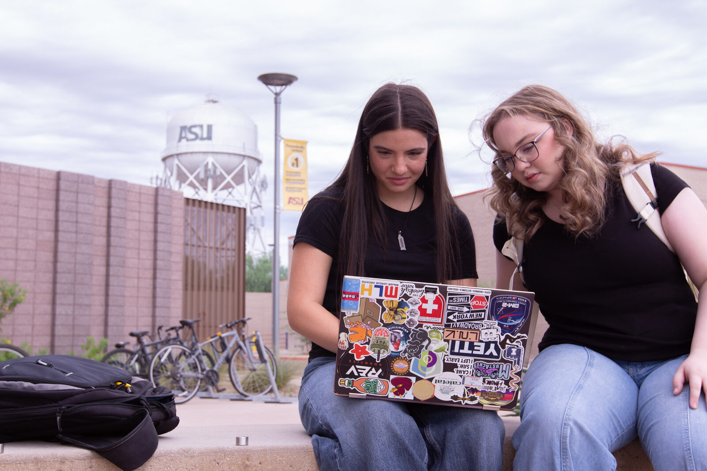

Alumnus
Sameerjeet Singh Chhabra
Studied robotics and autonomous systems at ASU through spring 2026, with PLC automation project work featured on this site's Media page. Now in production engineering at Tesla.
Alumni
This page collects public salary benchmarks from national surveys and graduates of ASU's Robotics and Autonomous Systems program. A "RAS graduate" card means the person graduated from the program; it does not by itself mean they worked in this lab.

Hands-on work at the lab's robot cells.
Independent benchmarks, all United States, in US dollars. Each comes from a different survey with a different cohort, year, and population, so they are not directly comparable with each other - and none of them measures outcomes of this lab or the Robotics and Autonomous Systems program specifically. They are reference points, not promises.
| Benchmark | Figure | Population, cohort, year | Source |
|---|---|---|---|
| Average starting base salary, engineering bachelor's degrees | $78,731 | US Class of 2025, projected starting offers, all engineering majors | NACE Winter 2025 Salary Survey |
| Average starting base salary, engineering master's degrees | $94,086 | US Class of 2025, projected starting offers, all engineering majors | NACE Winter 2025 Salary Survey |
| Median starting salary, engineering doctoral degrees | $115,956 (middle 50%: $93,352-$131,000) | US 2025 doctoral graduates, all engineering majors | NACE 2025 doctoral-degree starting salaries |
| Median annual wage, "Engineers, All Other" - the BLS wage category O*NET reports for robotics engineers | $122,930 | US employed engineers in that broad BLS category, 2025 (not a starting salary, not robotics-specific) | O*NET OnLine, Robotics Engineers (U.S. Bureau of Labor Statistics wage data) |
| Median full-time salary, ASU engineering graduate degrees | $95,000 | ASU Ira A. Fulton Schools of Engineering graduate-degree alumni, recent cohorts | ASU Fulton Schools graduate degree outcomes |
Actual offers vary by role, industry, and location. These benchmarks describe broad populations - not this lab's students, and not any one degree's premium over another.
Alumnus
Studied robotics and autonomous systems at ASU through spring 2026, with PLC automation project work featured on this site's Media page. Now in production engineering at Tesla.
RAS graduate
MS Robotics and Autonomous Systems (AI), ASU, 2019-2021. Robotics Software Engineer at Kawasaki Robotics.
RAS graduate
MS Robotics and Autonomous Systems, ASU, 2023-2025. Associate Manufacturing Equipment Engineer at Tesla.
RAS graduate
MS Robotics and Autonomous Systems (AI), ASU, 2024-2026. AI Software Engineer at EdPlus (Arizona State University).
RAS graduate
MS Robotics and Autonomous Systems (AI), ASU, 2025-2026. Firmware Development Engineer at Intel.
RAS graduate
MS Robotics and Autonomous Systems (AI), ASU, 2024-2026.
RAS graduate
MS Robotics and Autonomous Systems, ASU. Multi-robot wafer-handling project work in this lab, featured on this site's Media page. Now at Tesla.
Alumnus
Studied robotics engineering at ASU. Semiconductor Equipment Engineer at SpaceX.
The lab's PhD researchers are completing their doctoral degrees. They are still active in the lab - their full profiles are on the People page.
PhD candidate
Completing his PhD in Robotics and Autonomous Systems at ASU; develops and teaches the lab's hands-on robotics laboratories.
PhD student
Completing his PhD in Robotics and Autonomous Systems at ASU; co-author of the lab's instructional lab guides.